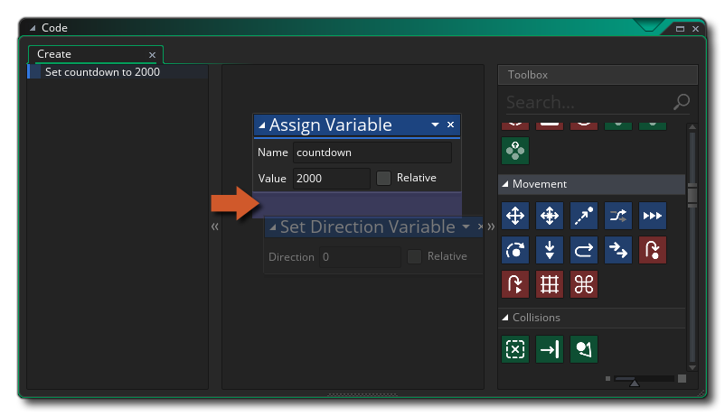
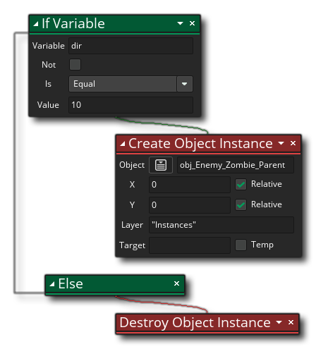
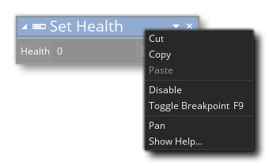

Pour ajouter des comportements à des objets, vous pouvez construire votre code en utilisant Actions des différentes bibliothèques disponibles dans la boîte à outils Action. Pour commencer, vous devrez créer un nouveau projet de glisser-déposer, puis créer un nouvel objet (vous pouvez également assigner un sprite à l'objet si nécessaire). Dans votre nouvel objet, vous pouvez commencer à ajouter des événements, et dans les événements, ajoutez vos actions de code DnD™. 
Notez que lorsque vous ajoutez un nouvel événement, une fenêtre "code" s'ouvre avec un onglet pour l'événement donné (voir l'image ci-dessus), et vous pouvez maintenant faire glisser n'importe quelle action de la Boîte à outils vers la droite dans le volet Bloc d'Action de la fenêtre de code. Maintenant, bien qu'il soit vrai que vous pouvez ajouter n'importe quelle action, cela ne signifie pas qu'ils fonctionneront tous ou que le projet compilera avec eux. Certaines actions nécessitent que les variables fonctionnent, tandis que d'autres - comme les actions Draw - ne fonctionneront que si elles sont utilisées dans un événement spécifique. Comment savez-vous lesquels utiliser? Eh bien, généralement, il s'agit simplement d'utiliser la logique... si une action nécessite une variable et que nous n'en avons pas encore défini, nous ne devrions pas l'utiliser avant d'avoir ajouté une action pour créer la variable.
Lorsque vous faites glisser une action de la boîte à outils dans l'espace de travail principal du bloc d'actions, elle se développe pour vous montrer les paramètres disponibles (arguments) que vous pouvez remplir et modifier pour définir le comportement. Dans l'image ci-dessous, nous avons déplacé une action Assign Variable de la bibliothèque Toolbox Common dans l'espace de travail du bloc d'actions:
Vous pouvez voir que la nouvelle action est également affichée sur la gauche de la fenêtre de code dans un raccourci. Vous pouvez cliquer sur cette liste d'actions, appelée Présentation de l'action, pour accéder rapidement à cette action afin de la modifier. Vous pouvez continuer à ajouter des actions à l'événement si nécessaire, chaque nouvelle action étant "chaînée" à la précédente pour afficher le flux du code DnD™ que vous construisez. Notez que la zone dans laquelle vous pouvez supprimer d'autres actions est mise en surbrillance sous l'action initiale et, en fonction de l'action que vous utilisez, différentes zones seront mises en surbrillance pour indiquer où dans la chaîne vous pouvez l'ajouter: 
Lorsque vous ajoutez des actions à l'espace de travail, elles seront "chaînées" aux actions ci-dessus afin que vous puissiez voir comment le code DnD™ circule, avec une action menant à une autre, et le volet de synthèse les affiche sous forme abrégée et dans l'ordre d'exécution: 
Certaines actions placeront le code dans une chaîne séparée du flux principal - des choses comme si créeraient une sous-chaîne d'actions qui devrait se produire si les conditions correctes sont remplies avant de continuer avec la chaîne principale: 
Notez que lorsque vous utilisez des actions qui peuvent avoir un bloc de chaîne latérale comme celui-ci, l'action aura deux zones en surbrillance pour abandonner d'autres actions: Une en dessous de l'action normale et une à droite de l'action pour montrer que vous voulez créer bloc d'actions séparé à exécuter lorsque la condition de la première action renvoie true: 
Vous pouvez changer la position des actions dans la chaîne en cliquant simplement sur  et en les faisant glisser dans la nouvelle position dont vous avez besoin, et si vous faites un clic et maintenez pendant une seconde puis déplacez la souris, vous pouvez déplacer l'action dans l'espace de travail tout en conservant sa place dans la chaîne du bloc d'action.
et en les faisant glisser dans la nouvelle position dont vous avez besoin, et si vous faites un clic et maintenez pendant une seconde puis déplacez la souris, vous pouvez déplacer l'action dans l'espace de travail tout en conservant sa place dans la chaîne du bloc d'action.
C'est l'essentiel de l'utilisation de l'éditeur de code Drag and Drop, mais d'autres détails importants sont expliqués dans les sections suivantes:
Il est important de noter que de nombreuses actions offrent une variable "cible", qui peut être marquée comme "temporaire", par exemple:
Cela signifie que vous pouvez fournir une variable "cible" qui contiendra la valeur renvoyée par l'action. Dans l'exemple d'action ci-dessus, l'action renvoie le volume de la ressource audio que vous sélectionnez. Vous indiquez donc une variable cible pour conserver cette valeur afin de pouvoir la référencer ultérieurement. Maintenant, cette variable cible devra avoir été déclarée précédemment en utilisant Assign Variable (qui crée une variable Instance ) ou Declare Temporary Variable (qui crée une variable temporaire locale ), mais si vous cochez l'option "Temp", vous pouvez simplement ajoutez un nom de variable et l'action créera cette variable et définira la valeur de retour pour vous (création d'une variable locale temporaire). Toutes les actions utilisées après cela peuvent maintenant accéder à la valeur dans la variable temporaire, mais seulement dans le même événement ou script. Les variables temporaires sont uniquement disponibles dans la portée dans laquelle elles ont été créées. Pour plus d'informations détaillées sur les variables et la portée variable, s'il vous plaît voir ici.
Les variables n'ont pas seulement des étendues (voir Variables cibles, ci-dessus), les actions peuvent également avoir des étendues différentes. En fait, presque toutes les actions peuvent avoir une portée différente, à partir de la fenêtre déroulante ouverte dans l'action elle-même, comme indiqué ici:
Vous pouvez également définir la portée de toutes les autres actions à l'aide de l'action spéciale Appliquer à. Pour plus d'informations sur cette fonctionnalité des actions DnD™, veuillez consulter ici:
Lorsque vous utilisez Drag and Drop, vous devez ajouter des variables et des expressions dans les différents champs de saisie des actions. Cependant, lorsque vous faites cela, vous obtenez souvent la fenêtre Auto Complete qui apparaît pour vous aider:
Cette fenêtre pop-up liste toutes les variables, constantes et fonctions GML ( GameMaker Language) intégrées, ainsi que toutes les ressources qui contiennent les lettres initiales de ce que vous étiez en train de taper. Il peut être utilisé pour trouver rapidement la ressource ou la variable dont vous avez besoin pour l'action sans avoir à tout saisir en vous-même. Par exemple, si toutes vos pièces sont préfixées "rm_", en tapant cela et en attendant un moment, la fenêtre auto complete sera affichée avec toutes les ressources commençant par "rm_". Notez que toutes les variables intégrées qui sont affichées dans la fenêtre d'achèvement automatique peuvent être utilisées partout où une variable ou une expression est attendue dans une action, comme peuvent le faire la plupart des fonctions GML.
Parfois, lorsque vous utilisez une action, vous verrez une petite icône plus
sur le côté. Cela signifie que vous pouvez développer l'action pour effectuer des tâches supplémentaires ou prendre d'autres arguments. Par exemple, si vous regardez l'action Déclarer les variables temporaires, vous pouvez voir qu'il a cette
Lorsque vous cliquez sur l'icône, l'action se développe et vous permet de déclarer plus de variables, ce qui facilite et accélère la définition de plusieurs variables en même temps.
L'icône peut également être utilisée pour les actions qui nécessitent des arguments facultatifs, comme l'action Choisir, qui vous permet d'ajouter différentes valeurs à renvoyer:
Lorsque vous travaillez sur votre code DnD™, vous pouvez cliquer sur le bouton droit de la souris
sur l'action (ou sur le texte dans la liste de gauche) pour ouvrir le menu suivant: 
Ce menu a les options suivantes:
- Couper / Copier / Coller: Ceci vous permettra de couper, copier ou coller n'importe quelle action sélectionnée. Notez que vous pouvez utiliser
+
en dehors des actions et faites glisser, ou utilisez
/
+
- Désactiver: cette commande désactive l'action (ou les actions) sélectionnée. Lorsqu'une action est désactivée, elle est toujours visible dans l'espace de travail mais elle ne s'exécutera pas lorsque vous compilez le jeu. De cette façon, vous pouvez ajouter / supprimer des actions pour tester et déboguer. L'image ci-dessous montre du code DnD™ avec des actions désactivées:
Vous pouvez voir que les actions " If Score " et " Go To Next Room "ont été désactivés et seront donc ignorés lorsque le jeu est testé ou compilé.
- Basculer le point d'arrêt: cette commande permet d'activer ou de désactiver un point d'arrêt pour l'action sélectionnée. Un point d'arrêt est simplement un point dans le code DnD™ où le débogueur doit s'arrêter lorsque le jeu est exécuté en mode débogage. Une action associée à un point d'arrêt sera surlignée, comme le montre l'image ci-dessous If Health "l'action a été définie comme un point d'arrêt":
- Panoramique: En sélectionnant ceci, vous effectuerez un panoramique et un zoom sur l'espace de travail pour faire la mise au point sur l'action sélectionnée.
- Afficher l'aide...: Cette option ouvre le manuel sur la page associée à l'action DnD™ actuellement sélectionnée afin que vous puissiez vérifier son fonctionnement.